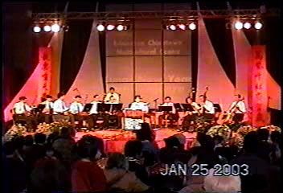
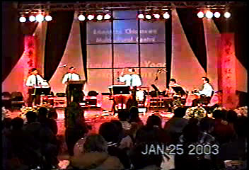
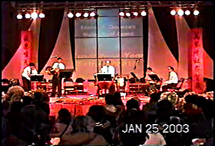

ECPA Orchestra performing at the 2003 Chinese New Year Extravaganza, Year of the Sheep, Northland Agricom, January 25, 2003
|  | Whole orchestra performing at the 2003 Chinese New Year
Extravaganza, Northland Agricom. The 2003 Chinese New Year Extravaganza is a charitable event with all proceeds from this fund raising effort going towards the Chinatown Multicultural Center and Chinese Library. |
|  | Percussion group performing at the 2003 Chinese New Year
Extravaganza, Northland Agricom. Playing three pieces of percussion
music: 1. Fishermen setup sail for another big harvest 2. Chinese Kung Fu 3. Welcoming the New Year cheerfully |
|  | From left to right, Roger on the small drum, Jason on Large Cymbal, Alan on large drum, Ruby on the large gong, Mang and Denny on the various small percussion instruments. |
| Click here for more pictures of the performance from other groups | Photo by mangcheng@telusplanet.net |
Contact : ecpa2001@hotmail.com